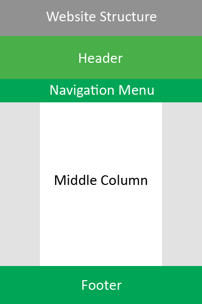
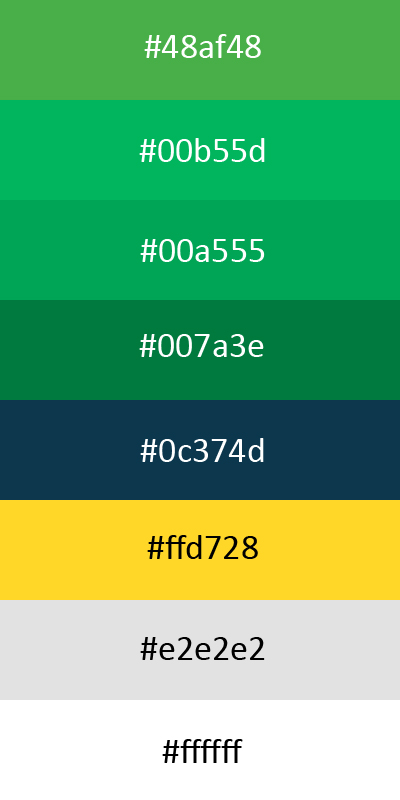

The website's structure consists of four key sections: the header, the footer, the navigation menu and the middle text column.
The header is located at the top of the page and features a coloured background and the name of the page.
The footer is located at the bottom of the page and contains a link to the top of the page.
The navigation menu is located beneath the header. It contains links to the other pages on the website.
The middle text column is the central area of each page. It has a white background and most of each page's content is located
within that area.
The diagram to the right shows the structure of the page. Click it to open the image at full size in a new tab.
| CSS Selectors/ID | Purpose |
|---|---|
| #header | Refers to the title of the current page and is located at the top of the page. Declared as an id as there is only one header on each page. |
| #footer | Refers to the bottom of the webpage, which contains a link to the top of the page, as well as my name. Declared as an id as there is only one header on each page. |
| .midcolumn | The center column of the website which contains the main text and images of each page. |
| .menuitems | Refers to the navigation menu and includes the links to each individual page in the website. When the user's cursor hovers over a link, the colour of the background changes. |
| #currentitem | The current web page the user is on is coloured in yellow and underlined in the navigation menu. Used to show the user which page they are on. Declared as an id as there is only one page that can be currently selected. |
| table th | The header row of the column. Customised to show white text and a green background to allow it to stand out against the other rows in the table. |
 The website features a green palette, chosen because green is my favourite colour. The shades of green used are #48af48 and Multiple shades of green are used so that the theme of the website remains consistent. As for the background of the website the colour #e2e2e2 is used, and the middle column of the website uses the colour white. The colour of the middle column was chosen to contrast with the background so that viewers can distinguish the text area from the background. In each table, the colour of the header row has also been customised with a background image, but also uses the colour as a background colour to retain a consistent colour scheme across the website. The full colour palette of the website is shown on the right. Click it to open the image at full size in a new tab.
This website was designed to be simplistic and have all of the website's content located within the centre of the website. This allows for website users to be able to concentrate solely on the centre of the website, without having to strain their eyes moving from the far left of the screen to the far right. This is especially helpful for users with higher resolutions and larger screens. The contrasting colours also serve as dividers between each element of the page, which helps users to identify the purpose of each element easily.
1.6 line spacing has been used in the web page so that lines are not pressed together so there is less clutter on each page. Sans-serif font has been used for the body of the page so that each word can be easily read. The prioritised font is Helvetica, then Arial and the any font within the sans-serif font family.
Different elements have been added to the website to provide users with ease of accessibility. This website has been tested on Google Chrome, Mozilla Firefox and Microsoft Edge, in addition to the Android versions of Chrome and Firefox.
| HTML/CSS element | Purpose |
|---|---|
| Viewport meta element | A viewport meta element has been added to the head section of the HTML page. This allows for the website to automatically adjust its width depending on the size of the user's screen size. This allows for users with smaller screen resolutions, e.g. 800x600 or mobile, to be able to view the website without the structure of the page being disrupted. |
| Different coloured text | Text in the header, navigation menu and footer have been coloured in white. This allows for the text to stand out against the green background. The current page selected in the navigation menu is coloured in #ffd728 to notify the user what page they're currently on. |
| Menu item hover | When the cursor hovers over the menu item, the item's background colour changes from to #00b55d. This helps users identify which page they are currently hovering on. |
| Sticky navigation menu | The code, position: sticky;, was added to the website's stylesheet. This allows for the menu to remain at the top of the screen no matter how far down they scroll. Users can then access other pages without having to scroll to the top everytime. |